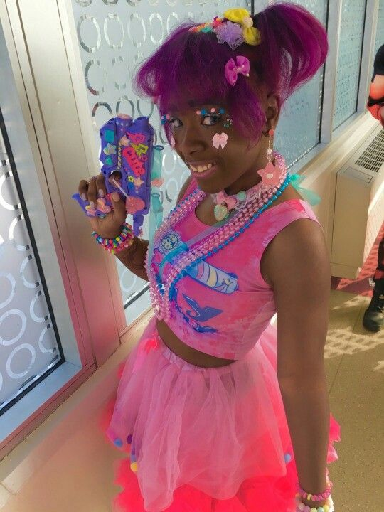
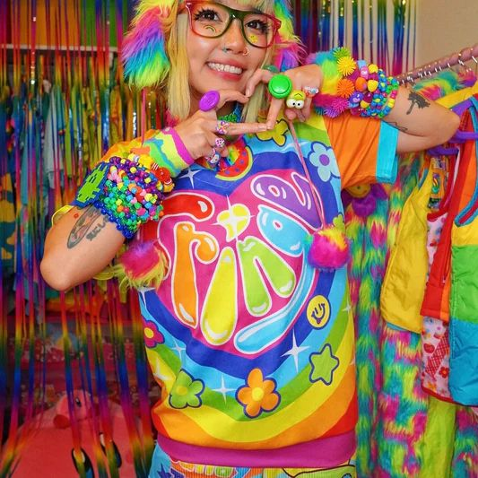
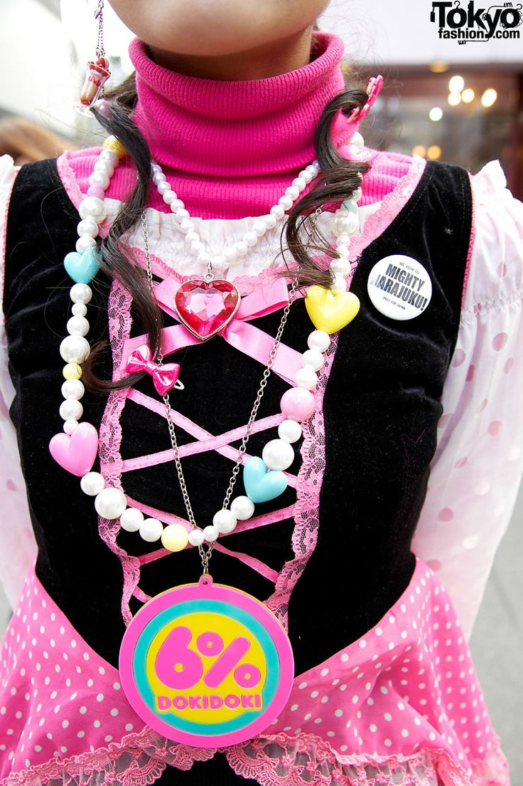

Hard Decora save apibudina kaip ,,agresyviai mielas" prekės ženklas. Hard Decora, kaip ir pavadinimas sako,ne tik kuria ir pardavinėja decora stiliaus drabužius bet ir leidžia komiksą, su ,,agresyviai mielomis" iliustracijomis

Nors yra ne viena drabužių parduotuvė, kuri pardavinėja decora drabužius ir aksesuarus, kaip ir dauguma alternartyvių stilių, decora yra paremta diy kultūra. Dauguma decora kuria savo papuošalus, o drabužius perka iš belekur kur tik yra pardavinėjami spalvoti drabužiai.
CANDY☆TRAP 2018 metais įkurė cybr.grl. Kai jai pabodo spalvingų drabužių trūkumas įvairioms kūno formoms, ji įkurė savo, spalvingiausią visoje visatoje, drabužių įmonę, skatinančią visus rengtis smagiai

6%DOKIDOKI yra viena žinomiausių parduotuvių, pardavinėjančių decora stiliaus drabužius ir aksesuarus, tačiau pati parduotuvė stengiasi nekurti mados rėmų, ir kuria įvairiausius drabužių dizainus.
